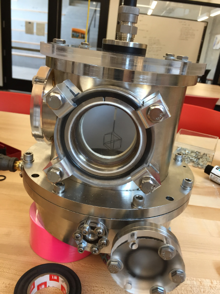
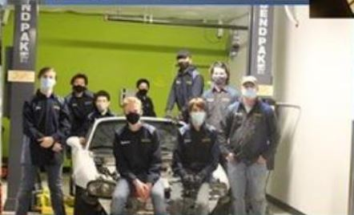

My life as a student
I currently attened Eastside Prepatory School where I am a sophomore. I am a STEM focused person, but also enjoy doing other things
You can see a portfolio for my other passions here.
Learn more about my life below!
Fusor
One of my passions is fusor! It's a club at my school, EPS, where we are trying to fuse together deterium (an isotope of hydrogen) with itself.
The club was started in 2015 and still runs today. There are lots of things we are looking to improve on, such as designing volatile gas intake systems, working with high-voltage systems, building safe shielding, modeling particle flow, and improving the control server.

Newspaper club
I am a part of EPS' newspaper club, the Eagle Eye! I am a writer who focuses on sports! I've written and been interviewed for many articles. Recently I predicted the 2022 super bowl champs, the Los Angeles Rams, before the playoffs even started!
I also predicted the 2021 NBA MVP, Nikola Jokic last year! Check out our newspaper website here and check out some of our articles!

EV club
EV is a club at EPS. Our goal is to build an electric car. It's been going on at EPS for several years and is still running today. I am still new to the EV team but I've had lots of fun learning how it works and working on the project!
you can learn more about EV at our school's website, right here.
